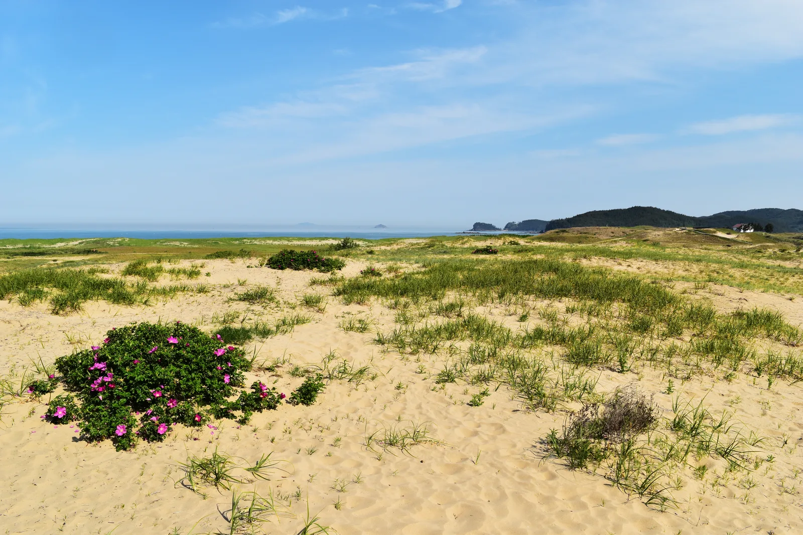
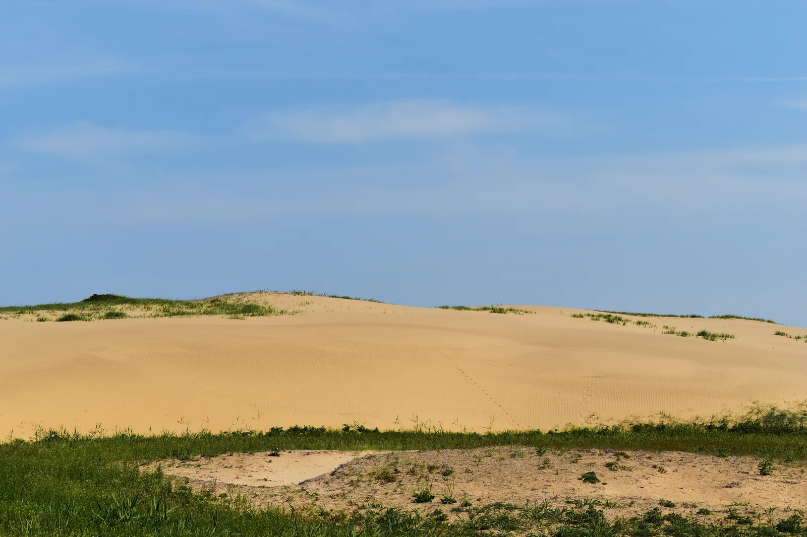
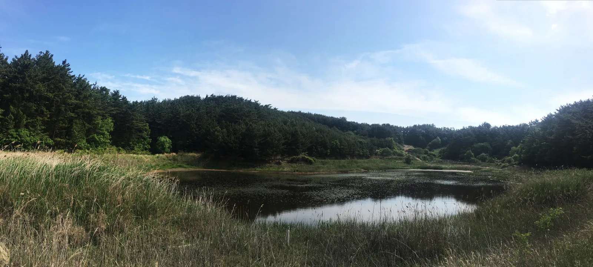
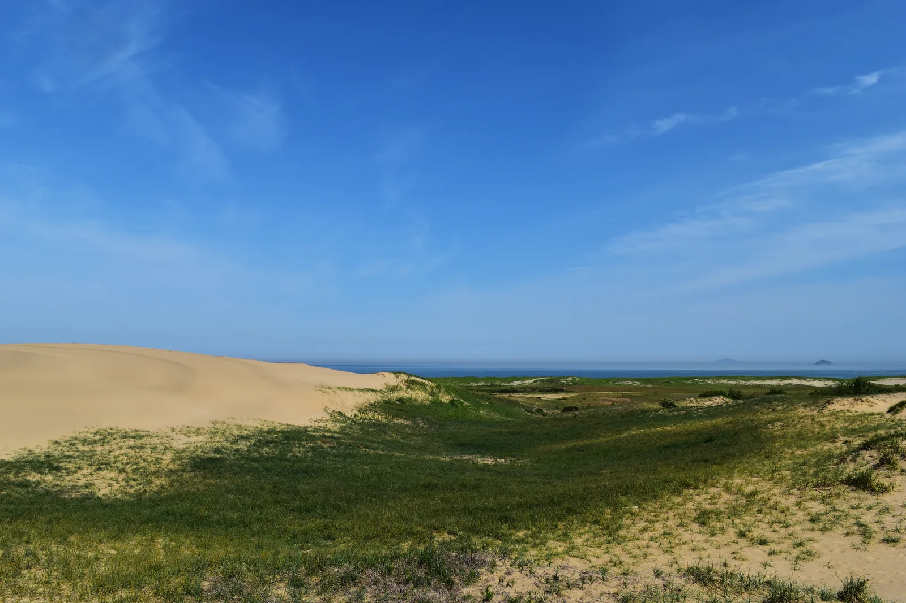

▲ 국내 최대 규모 해안사구로 꼽히는 태안 신두리 해안사구. 길이 약 3.4km, 폭 500m~1.3km에 걸쳐 있다
충남 태안군 원북면 신두리 해변에는 언뜻 사막처럼 보이는 풍경이 펼쳐진다. 신두리 해안사구다. 길이 약 3.4km, 폭 500m~1.3km에 걸쳐 이어지는 국내 최대 규모 해안사구로, 2001년 천연기념물 제431호로 지정됐다. 모래언덕이라고 다 같은 모래언덕이 아니다. 통보리사초와 해당화가 뿌리내려 모래를 붙잡고, 그 뒤로는 람사르협약에 등록된 배후습지 두웅습지가 자리한다. 사구만 보고 돌아가면 절반만 본 셈이다. 형성 배경부터 탐방코스, 해설 예약, 두웅습지, 개방시간·주차까지 방문 순서대로 정리했다.
1. 국내 최대 해안사구 — 규모와 위치

▲ 사구 능선을 가로지르는 탐방로. 저 멀리 신두리 마을과 바다가 함께 보인다 ⓒ Wikimedia Commons
신두리 해안사구는 태안군 원북면 신두리 해안을 따라 형성된 사구 지대로, 길이 약 3.4km, 폭 500m~1.3km에 이른다. 국내에 남아있는 해안사구 중 가장 크고 원형이 잘 보존된 곳으로 꼽힌다. 겨울철 강한 북서풍이 부는 위치에 자리한 데다, 인접 해역이 모래로 이뤄져 있어 썰물 때 드러나는 넓은 모래갯벌·해빈의 모래가 바람에 실려 육지 쪽으로 쌓이기 좋은 지형 조건을 갖췄다. 사구가 정확히 언제부터 쌓이기 시작했는지에 대해서는 마지막 빙하기 이후 약 1만5000년에 걸쳐 형성됐다는 설과, 지금 보이는 사구 지형 자체는 비교적 최근인 700~1000년 사이에 쌓였다는 설이 함께 제시된다. 확실한 것은 오랜 시간 바람과 파도가 빚어낸 지형이라는 점이다.
2. 사막처럼 보이지만 살아있다 — 사구식물과 생태계

▲ 모래언덕 위에 자리 잡은 해당화 군락. 전국 최대 규모의 해당화 군락지로도 꼽힌다 ⓒ Wikimedia Commons
맨눈으로 보면 사막처럼 황량해 보이지만, 신두리 해안사구는 통보리사초·갯쇠보리·좀보리사초·갯방풍·갯메꽃 같은 사구식물이 모래를 붙잡고 있는 생태계다. 특히 해당화 군락이 넓게 분포해 전국에서 손꼽히는 해당화 자생지로 알려져 있다. 동물군으로는 멸종위기 야생생물로 지정된 표범장지뱀을 비롯해 종다리, 쇠똥구리 등이 서식한다. 사구식물의 뿌리는 단순한 경관 요소가 아니라 모래가 바람에 날아가지 않도록 붙잡아주는 역할을 하는데, 이 식생대가 훼손되면 사구 지형 자체가 빠르게 무너질 수 있어 탐방로를 벗어나지 않는 것이 중요하다.

▲ 바람이 만든 물결무늬가 그대로 남은 모래언덕 능선. 발자국 하나에도 지형이 쉽게 바뀐다 ⓒ Wikimedia Commons
3. 천연기념물 제431호 — 지정 배경
신두리 해안사구는 2001년 11월 30일 천연기념물 제431호로 지정됐다. 국내에서 원형이 가장 잘 남아있는 해안사구 생태계라는 학술적 가치를 인정받은 결과다. 한때 사구 일대에 골프장 등 개발 계획이 추진되면서 훼손 우려가 커졌고, 이 과정에서 사구의 희소성과 보전 가치가 재조명되며 천연기념물 지정으로 이어졌다. 국가지질공원 지질유산으로도 분류돼 있어, 자연유산이자 지질유산으로 이중으로 관리받는 지역이다. 지정 이후에는 탐방로 이외 구역 출입이 제한되고, 해설사를 동반한 탐방 프로그램이 함께 운영되고 있다.
태안군청 오감관광에서 신두리해안사구 안내 확인 가능4. 탐방로 3코스와 무료 해설 프로그램
신두리 해안사구 탐방로는 거리와 소요시간에 따라 A·B·C 세 코스로 나뉜다. A코스는 1.2km로 약 30분, B코스는 2km로 약 1시간, C코스는 4km로 약 2시간이 걸린다. 시간이 넉넉하지 않다면 A코스만으로도 사구의 대표 풍경을 볼 수 있고, 두웅습지까지 함께 돌아보려면 B코스 이상을 추천할 만하다. 사구 안쪽은 식생 보호를 위해 나무 데크와 지정 탐방로로만 이동할 수 있다.
신두리사구센터에서는 무료 해설 프로그램도 운영한다. 하루 3회(오전 10시, 오후 2시, 오후 4시) 진행되며, 1팀 최대 15명까지 참여할 수 있다. 인터넷 예약 또는 전화(041-670-5936)로 성명·연락처·희망 날짜와 시간·인원을 접수하면 되고, 예약 시간에서 20분 이상 늦으면 예약이 자동 취소된다. 해설 프로그램 운영 시간은 3~10월 09:00~18:00, 11~2월 09:00~17:00이며 매주 월요일과 신정·설날·추석 당일은 쉰다.
태안군청 오감관광에서 해설예약 신청 가능5. 두웅습지 — 사구를 지키는 람사르습지

▲ 신두리 해안사구의 배후습지인 두웅습지. 2007년 람사르협약에 등록됐다 ⓒ Wikimedia Commons
신두리 해안사구 안쪽, 사구 능선을 넘어서면 작은 민물습지인 두웅습지가 나온다. 면적은 약 6만4595㎡(0.2㎢)로, 원래는 바닷가였다가 사구가 형성되는 과정에서 모래언덕에 둘러싸인 배후습지로 남게 됐다. 2002년 습지보호지역으로 지정됐고, 2007년에는 람사르협약 등록습지가 됐다. 식물 311종, 육상곤충 110종, 어류·양서류 20여 종이 서식하는 것으로 조사됐으며, 멸종위기 야생생물인 금개구리를 비롯해 맹꽁이, 표범장지뱀 같은 희귀종의 서식지이기도 하다. 두웅습지가 오염되거나 훼손되면 사구 생태계 전체가 영향을 받는 구조라, 사구와 습지는 하나의 생태축으로 함께 관리된다.
6. 개방시간·주차·가는 법
신두리 해안사구는 입장료와 주차비 모두 무료다. 대형버스 주차도 가능하다. 다만 개방시간은 계절에 따라 다르게 운영되니 방문 전 확인이 필요하다.
| 항목 | 내용 |
|---|---|
| 입장료·주차비 | 무료(대형버스 가능) |
| 개방시간(하절기 4~10월) | 09:00~18:00 |
| 개방시간(동절기 11~3월) | 09:00~17:00 |
| 휴무일 | 매주 월요일, 신정·설날 당일 |
| 탐방코스 | A(1.2km·30분) / B(2km·1시간) / C(4km·2시간) |
| 해설 프로그램 | 1일 3회(10시·14시·16시), 무료, 1팀 최대 15명 |
| 위치 | 충남 태안군 원북면 신두리 일원 |
| 문의 | 신두리사구센터 041-672-0499 |
7. 신두리해수욕장과 함께 묶는 반나절 코스

▲ 사구 능선 너머로 펼쳐지는 서해 바다. 사구 바로 옆이 신두리해수욕장이다 ⓒ Wikimedia Commons
신두리 해안사구는 신두리해수욕장과 나란히 붙어 있다. 넓은 백사장과 사구가 이어지는 지형이라, 사구 탐방을 마친 뒤 해변으로 내려가 갯벌 체험이나 해루질을 즐기는 코스가 자연스럽다. 해당화 군락과 서해 낙조를 함께 볼 수 있는 저녁 시간대 방문도 추천할 만하다. 태안 해안 전체를 도는 일정이라면 인근의 천리포수목원이나 안면도 방향으로 코스를 이어 붙일 수도 있지만, 신두리 사구·습지만 제대로 둘러봐도 반나절은 충분히 채워진다.
✅ 태안 신두리 해안사구, 가기 전 체크리스트
· 길이 3.4km·폭 500m~1.3km, 국내 최대 규모 해안사구, 2001년 11월 30일 천연기념물 제431호 지정
· 통보리사초·해당화 등 사구식물이 모래를 붙잡는 살아있는 생태계, 표범장지뱀 등 서식
· 탐방로는 A(1.2km)·B(2km)·C(4km) 3코스, 나무 데크·지정로 이외 출입 제한
· 신두리사구센터 무료 해설 프로그램 1일 3회(10시·14시·16시), 인터넷·전화(041-670-5936) 예약
· 배후습지 두웅습지는 2007년 람사르협약 등록습지, 금개구리·맹꽁이 등 서식
· 입장료·주차비 무료, 개방시간은 하절기 09:00~18:00, 동절기 09:00~17:00, 월요일 휴무
· 신두리해수욕장과 바로 맞닿아 있어 사구 탐방과 해변·낙조를 함께 즐기기 좋음